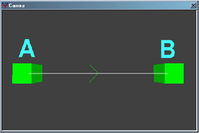
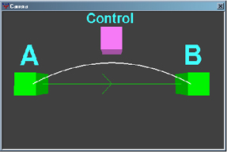
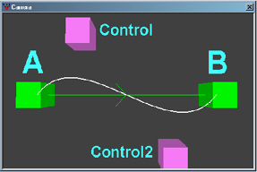

© 2003 Splash Damage, Ltd. All Rights Reserved.

| Wolfenstein: Enemy Territory Documentation © 2003 Splash Damage, Ltd. All Rights Reserved. |
|
The spline path is defined by two new entities called info_train_spline_main and info_train_spline_control . All spline paths are calculated on the 'fly' and will visually look smoother the higher the frame rate.
The spline path system cannot stop objects mid flow between spline points. For greater control of an objects movement use more spline points.
|  | To create a simple path first place two
info_train_spline_main
entities and target one to the other. This will create a simple linear path
from one point to another.
When an entity is moved to point A it will face on a line towards point B. As the entity moves forward on the spline path it will face towards point B. |
|  | To create a curve between two points add an
info_train_spline_control
entity. Select the control entity and give it a targetname key with a unique
value. Select point A and add a control key with the same value as the control
entities targetname key.
When an entity is moved to point A it will face on a line towards the control point. As the entity moves forward it will adjust its face angle based on control and point B. |
|  | To have multiple control points for a spline, add each entity as before and create unique targetname keys for each control point. Select point A and add the relevant keys based on how many control points. The key names must be: control, control2, control3, etc. There is an upper limit of 16 control points, and the more you use, the more CPU it requires, though unless there is excessive use there should not be any noticeable problem. |
A new command has been added to BobToolz to enable plotting of the spline paths in SDRadiant, in order to visualize the path your entity will take.